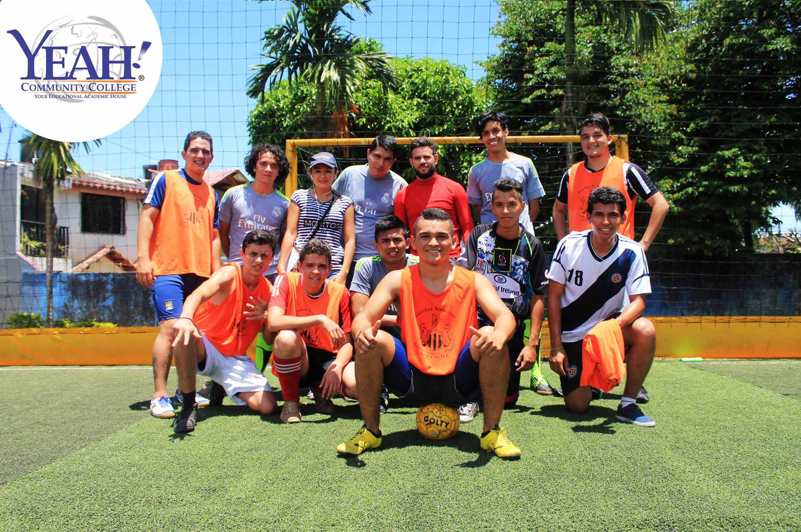
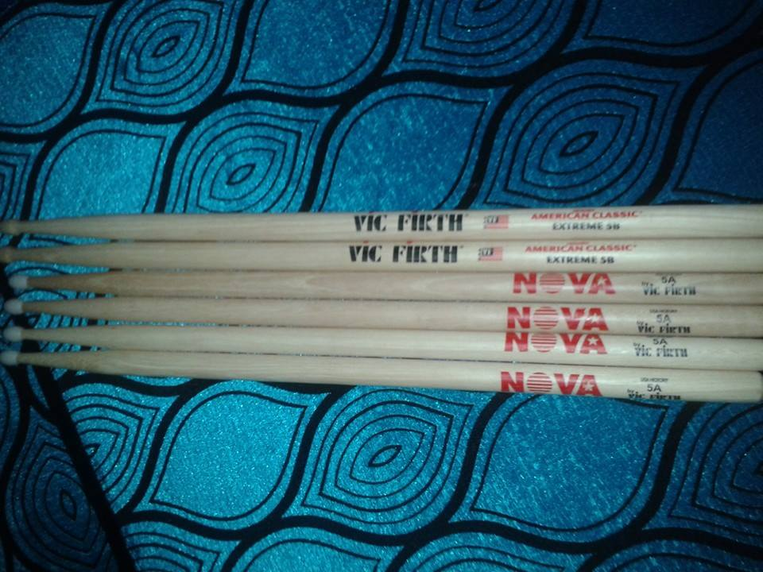
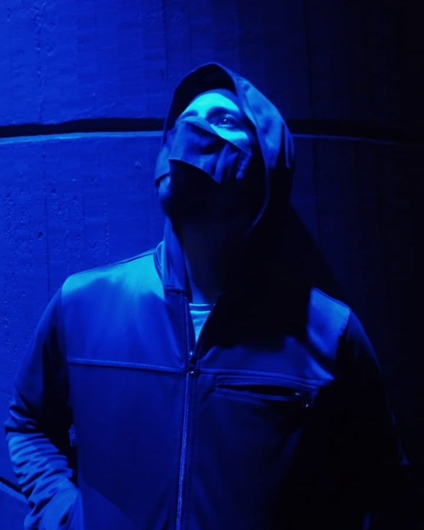
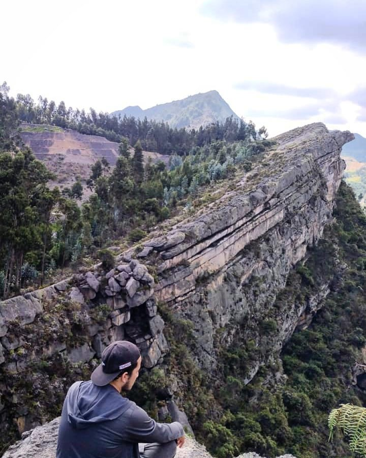

Football
One of my hobbies is playing football. This is a picture from about 10 years ago, when I was part of a team that competed in a local 5v5 football tournament—which we ended up winning.

Music
I have always had a deep appreciation for music and aspired to become a musician. I learned to play the drums at a young age and practiced for several years. Although I do not currently own a drum set and have therefore been unable to continue practicing, acquiring one is part of my future plans so that I can return to playing and once again enjoy expressing myself through music.

Photography
About five years ago, I developed an interest in photography. I enjoyed going to parks and scenic locations to capture beautiful images. Although I do not practice it as often now due to other responsibilities that keep me at home, I plan to return to photography in the future when the opportunity arises.

Hiking
Alongside my interest in landscape photography, I enjoy spending time in nature as a way to step away from the hustle and noise of the city. Whether hiking or simply sitting in a spot with a beautiful view, I find it to be a refreshing experience that allows me to relax, recharge, and feel renewed.